Aug 22, 2010 · 4 minute read · Comments
Hobbies
Hace un par de semanas blogs especializados como El Androide Libre publicaban rumores sobre una posible asociación entre Google y Sony para crear un terminal Android dedicado al gaming. Sé que llego tarde, como de costumbre, pero me pareció una oportunidad interesante para mostrar mi opinión al respecto. Evidentemente aún no ha sido confirmado nada y en este artículo no puedo sino dejar llevar mi imaginación por un mundo ficticio de color rosa.
Los datos son escasos pero básicamente indican que este supuesto terminal vendría bajo el sello “Playstation”, es decir, sería la sucesora de la actual PSP. Entre sus características se encontrarían un procesador S
napDragon, una pantalla de 4 pulgadas, cámara de 5 megapíxels y la versión 3.0 de Android. Al contar con el apoyo de Sony recibiría franquicias como God of War, Little Big Planet o Call of Duty. Teóricamente se confirmaría de cara a la campaña navideña convirtiéndose en la competencia directa de iPhone.
Un paso lógico
El incremento de potencia y el aumento de demanda de los smartphones posibilitan videojuegos más avanzados y profundos, por ello vemos títulos de amplio presupuesto como GTA
Chinatown Wars en iPhone a la vez que en PSP o NDS. El supuesto paso de Sony y Google puede parecer sorprendente aunque en el fondo me parece tremendamente lógico. Nintendo tiene una parcela ganada en el terreno portátil, no obstante, PSP al estar dirigida a un público ligeramente más adulto y habituado a jugar se enfrenta a Apple cada vez de forma más directa.
El mercado de aplicaciones en iPhone es mastodóntico gracias a la store y la comunidad que hay detrás. Sony ya se ha aventurado en el mundo de la distribución digital con PSP Go obteniendo resultados catastróficos. El elevado precio de la consola, la imposibilidad de recuperar títulos ya adquiridos y el deficiente acceso a los juegos la condenaron casi de forma inmediata.
Google desea expandir cada vez más su sistema operativo para móviles y su punto débil es el terreno multimedia dentro del cual se encuentran los videojuegos. Desde hace meses Google ha comprado varios pequeños estudios de la industria. Maniobras que, unidas a esta, denotan el impulso que se le pretende dar al gaming en Android para equipararlo con iPhone.
Las posibilidades
Como soñar es gratis puedo escribir en este apartado lo que me venga en gana aunque trataré de hacerlo con un mínimo de sensatez porque los eventos jamás se desarrollan exactamente como nos gustaría. Combinar las características de una consola cerrada clásica (distribuidoras, estudios y proyectos grandes que la apoyen) con el tinte libre y de aplicaciones pequeñas que tiene Android puede ser complicado. Para empezar con buen pie pienso firmemente en la necesidad de una reforma en el Android market de forma que sea mucho más sencillo acceder a aplicaciones.
Muchos usuarios se decantan por iPhone debido a los juegos, amenizar el camino al trabajo o a la universidad con unas partidillas no tiene precio. Desgraciadamente deben dejar en el camino las libertades que proporciona Android. Si a dicho público se le pudiera ofrecer un dispositivo que aunara las posibilidades de personalización y flexibilidad con juegos de sellos importantes podrían cambiar de opinión. Mi caso es similar: me encantaría disfrutar de los juegos de iPhone pero al otorgarle más valor a las ventajas de Android, me decanté por este último.
Más que la llegada de Sony al mercado de los smarphones considero más interesante el posible crecimiento de Android gracias a los videojuegos. Las facilidades de publicación de software en el market en contraposición con el filtro que impone Apple atraerían a desarrolladores jóvenes y a estudios pequeños. Sin duda, una ventana abierta a su propia madure
z y expansión. Las empresas que acaban de formarse asumen riesgos importantes y suelen tener problemas de financiación, desarrollar en Android en este futuro deseable aumentaría sus posibilidades de poder lanzar un pequeño juego rentable en un corto periodo de tiempo.
Mi previsión
Suponiendo que el acuerdo entre las dos compañías y el dispositivo sean reales me surgen numerosas dudas. Sería determinante conocer si los juegos “Playstation” se distribuirían a través del market al que estamos acostumbrados. Además, está por ver si se proporcionará un SDK específico para videojuegos y si la política de publicación en el market al usar este supuesto SDK cambiarán con respecto a la actual. ¿Será Sony un publisher más en el market o tratará de tomar un control más directo? Podría producirse un cambio a mejor pero los interrogantes y los puntos en los que el asunto se puede ir al traste son demasiados.
No pretendo hacer de adivino místico, simplemente me ha parecido interesante exponer mis impresiones sobre los rumores que han surgido.
Aug 18, 2010 · 4 minute read · Comments
Hobbies
El principal problema de Dante’s Inferno fue su fecha de lanzamiento, febrero de este año, demasiado cercano a la super-producción God of War III o al polémico Bayonetta. Desconozco si fue una decisión comercial de EA o producto algún retraso en Visceral Games, lo cierto es que el hecho no le hizo ningún favor de cara a la crítica especializada ni a las ventas. Con tanto hack"n slash entre las manos el tiro les salió por la culata. En cualquier caso, como comentaré en este artículo, puede que lo tuvieran merecido.
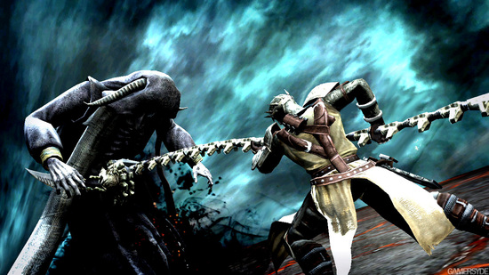
No hay que ser demasiado avispado para suponer que Dante’s Inferno se basa (de manera muy libre) en el primer cántico de la Divina Comedia escrita por Dante Alighieri allá por el S. XIV. Al igual que en el poema épico, el protagonista es Dante, un cruzado que debe atravesar los círculos del infierno para recuperar el alma de su amada Beatriz. Durante tan heroico viaje descubriremos como nuestro cruzado no era precisamente un santo y que tiene un pasado de lo más truculento.
La historia se narra a través de escenas cinemáticas muy conseguidas combinadas con ilustraciones estilo cómic americano. No es que las viñetas me disgusten pero bien podrían haber aumentado el número de cinemáticas con respecto al de secuencias de ilustraciones. Seguramente se deba a falta de fondos o tiempo. Como curiosidad añadir que en países como Estados Unidos causó gran polémica y se le acusó de herir la sensibilidad de colectivos religiosos.
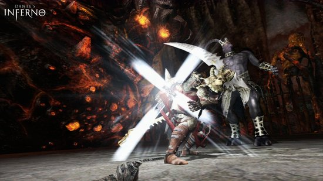
Si la fórmula funciona, ¿por qué cambiarla?
Eso es lo que debieron pensar en Visceral Games mientras diseñaban Dante’s Inferno. Al espartano Kratos le había ido de maravilla en su saga God of War así que sería ideal tomar todas sus señas, cambiarle la carátula y meter el cóctel en el envase del Infierno de Dante. Si señalo que los controles son prácticamente los mismos que en el título de Sony ya os podéis hacer una idea. Vale, Dante lleva la guadaña de la Parca en lugar de hojas soldadas con cadenas a sus muñecas, pero la mecánica es idéntica. Los clásicos elementos en el escenario que recargan nuestra vida o “maná” siguen presentes y también podemos mejorar nuestras habilidades con los puntos que obtenemos al eliminar a nuestros enemigos.
Quizás este es el punto en el que Dante’s Inferno presenta una mayor elaboración. Existen dos caminos: el de la condena eterna o el de la absolución. Dante posee, entre su arsenal, una cruz sagrada que puede utilizar para absolver a sus enemigos o a personajes clásicos de la obra de Alighieri aunque, por el contrario, puede optar por condenarlos para siempre. Según nuestra decisión obtendremos un tipo distinto de experiencia que podremos utilizar para avanzar por el árbol de habilidades correspondiente a cada bando.
Parece mentira como un estudio pueda desarrollar un producto tan refrescante para un género como lo fue Dead Space para, más tarde, acabar haciendo un clon mediocre de una saga magistral. God of War es una saga explosiva, dinámica, cargada de adrenalina. En cambio, Dante’s Inferno no consigue esa velocidad e intensidad de su más directo competidor.
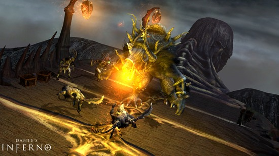
Un infierno templadito
Cuando no se innova en la jugabilidad se espera recibir a cambio algún aliciente, por ejemplo una ambientación inmersiva o un apartado técnico sorprendente. Dante’s Inferno retrata con mediano acierto el abismo pero el jugador no deja de percibir la sensación de estar viviendo una experiencia “light”. Gráficamente es de lo más discreto, no aparecen tantos modelos en pantalla como para justificar la escasa variedad y riqueza de texturas.
En cualquier caso, el juego no hiere la vista y sigo pensando que, a través del diseño de escenarios o del juego de luces y cámaras se podría haber conseguido una experiencia más absorbente. Dudo que aparezca una secuela pero si el caso se diera, este sería uno de los puntos principales a mejorar.
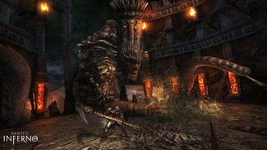
Resumiendo
Dante’s Inferno no hace sino incrementar la montaña de títulos de acción de Playstation 3 y X-Box 360 y adquirirlo por su precio de salida (70€) sería una absoluta locura. Tomé la decisión de adquirirlo a través de la importación y lo jugué por 15€, por lo que la relación calidad/precio se normaliza, incluso diría que merece la pena si el género es de tu agrado. Por lo demás no deja de ser una copia de lo que se ha visto hasta ahora, pero sobre todo de God of War. Hay que ser justos y, a pesar de todo, no es mal juego.
Aug 14, 2010 · 3 minute read · Comments
Hobbies
Escucho podcasts desde hace bastante por lo que necesito un sistema de suscripción que pueda utilizar para descargar los últimos episodios automáticamente y sincronizarlos con mi iPod de manera sencilla. Por supuesto, los problemas se acaban para los usuarios de Windows y Mac utilizando iTunes (mientras que puedan soportarlo), no obstante los usuarios de GNU/Linux lo tienen más complicado. En mi Ubuntu probé varias alternativas como GtkPod, Rythmbox e incluso Amarok aunque ninguna me convenció. Fue entonces cuando descubrí un cliente de podcast liberado bajo GPL v3 llamado gPodder.
gpodder permite suscribirnos a cualquier podcast mediante su feed, momento en el cual pasará a nuestra lista. Desde la lista podemos ver, descargar o escuchar los episodios ordenados de forma cronológicamente inversa. De manera bastante inteligente nos gestiona los episodios que hemos escuchado y los pendientes así como los que hemos transferido ya a nuestro dispositivo de audio. Como ya he mencionado, podemos sincronizar episodios con nuestro iPod de una manera rápida, incluso respetando el Cover Flow (característica deseable que no todos los clientes consiguen).
Desde el panel de opciones podemos personalizar casi cualquier aspecto. Desde la frecuencia de actualización de episodios como el deseo de colocarlos en la lista de descargas de forma automática o el momento en el que queremos borrar episodios antiguos. Gpodder, además, nos ayuda a gestionar varios dispositivos externos a la vez, ya tengan las pijadas de un iPod en cuanto a sistema de ficheros o sean reproductores MP3 comunes.
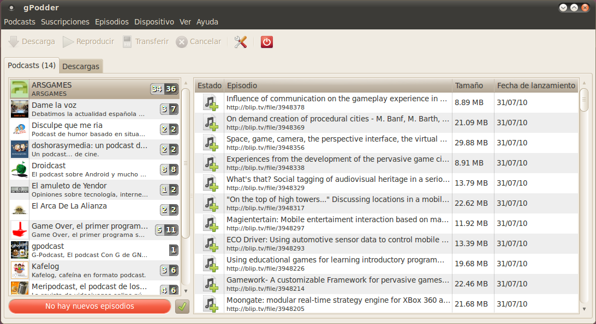
Quizás el aspecto que distingue a gPodder de otros clientes es su portal online. Si nos registramos accederemos a una especie de red social y directorio de podcasts combinados. Aparecen referencias a cientos de podcasts clasificados por temática, todos junto con la valoración de sus suscriptores. Podemos gestionar los equipos en los que tenemos instalado gPodder y elegir a qué podcasts estará suscrito cada uno. Tenemos dos opciones, compartir nuestra lista para que otros usuarios vean nuestras recomendaciones o mantener nuestra privacidad. Hay que reconocer que la navegación no es todo lo cómoda que debiera y se echan de menos algunos elementos adicionales pero el servicio que ofrece es más que aceptable. Por último, señalar que podemos sincronizar en todo momento el cliente de escritorio con nuestra cuenta online para añadir suscripciones nuevas.
Siempre es deseable descargar los episodios a nuestro reproductor multimeda de manera directa aunque esto sólo podemos hacerlo si tenemos una tarifa de datos. Quizás otro día hable del cliente de podcasts que utilizo en mi móvil Android, eso ya es otra historia. Si lo que queremos es una aplicación de escritorio sencilla pero potente, gPodder es una excelente opción. No sólo es libre sino que es multiplataforma (Windows, GNU/Linux, Mac, Maemo y FreeBSD).
Aug 12, 2010 · 4 minute read · Comments
Hobbies
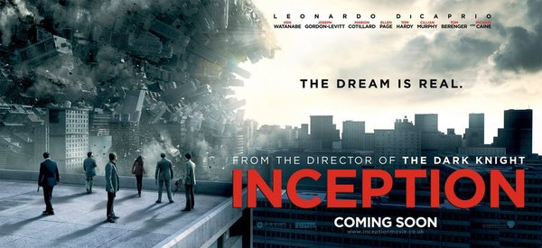
Inception es el largometraje que puede consagrar a Christopher Nolan como guionista y director de culto. Tras obras como “The Prestige”, “Memento” o “The Dark Knight” nos trae un viaje de ciencia ficción muy complicado de describir. Poco o nada sabía de esta película hasta que se produjo el sensacionalista despliegue mediático de los últimos días. Apariciones en televisión, tercer puesto en IMDB (los rankings siempre son polémicos) e incluso la he visto retratada como “la mejor película de todos los tiempos” en algún blog. Desde luego fue ventajoso acudir a la sala con expectativas moderadas pues pocas posibilidades existían entonces de decepción.
Origen en su traducción al español, nos traslada a un mundo en el que es posible compartir y manipular sueños ajenos. El espionaje industrial alcanza una nueva dimensión donde que grandes corporaciones contratan a ladrones que actúan en los sueños (más conocidos como extractores) para arrebatarle información a la competencia. En este contexto se encuentra Cobb (Leonardo Di Caprio), uno de los mejores extractores que busca la redención para recuperar a su familia de forma desesperada. Para conseguirlo debe arrastrar a un equipo e iniciar una operación al más puro estilo “Ocean’s Eleven” en el confuso mundo de los sueños.
Estoy completamente de acuerdo en que Inception ha bebido de otras muchas obras siendo la más evidente “The Matrix” con su visión especial del “Mito de la Caverna” de Platón. De hecho sería una película mediocre si se quedara en ese punto, por suerte, la obra que nos ocupa esgrime más de una razón para ir más allá. Una de sus virtudes es que demuestra que el cine comercial no tiene por qué ser burdo ni estar vacío (que no es decir poco), tiene sustancia y a la vez está hecha para gustar a un público amplio, veamos los motivos.
Uno de los pilares básicos de Inception es el entrelazado de sueños y la incertidumbre de no distinguir la realidad de la fantasía. Llevar realidades y líneas argumentales paralelas en una misma película es muy complicado y Christopher Nolan sale bien parado de su atrevimiento. Como no podía ser de otra forma se toman varias licencias en el plano de lo estrictamente coherente y científico pero son comprensibles y si, el espectador viene dispuesto, se aceptan sin más. Cabe destacar la espectacular y onírica forma en la que nos introducen en el mundo de la manipulación de sueños, infinitas posibilidades, leyes de la física que podemos romper y todo por construir.
A las realidades difusas y a la reflexión sobre el subconsciente hay que sumarle una puesta en escena admirable. La secuencias de acción y los efectos especiales abundan sin llegar al hiperbolismo de otras producciones. En cambio, es la dosis suficiente como para mantener un ritmo trepidante y no aburrir a los menos acostumbrados a películas pausadas. Ha sido de especial agrado ver persecuciones que no estén protagonizadas por explosiones nucleares, cámaras lentas o movimientos espasmódicos de la cámara.
No he mencionado aún el componente dramático centrado en el intento de Cobb por recuperar a su familia perdida. Hay que reconocer que al principio nos es completamente indiferente aunque la implicación del espectador en este aspecto va “in crescendo”. De esta manera se consigue la tensión que antes mencionaba. Esperaba más de la banda sonora, ya que tenía detrás a un gran compositor de acompañamientos para cine y videojuegos, Hans Zimmer. En cualquier caso no desentona para nada, simplemente pasa desapercibida.
Una película sobresaliente, la mejor en lo que va de año sobre todo porque me ha pillado por sorpresa. No me atrevo a decir más por no caer en la banalidad de perder las distancias y dejarme llevar por el entusiasmo del momento como ha ocurrido en otras reseñas. Si a estas alturas no te he convencido es que me expreso o escribo peor de lo que creía. No puedo sino recomendar su visionado en un buen cine.
Aug 11, 2010 · 4 minute read · Comments
Hobbies
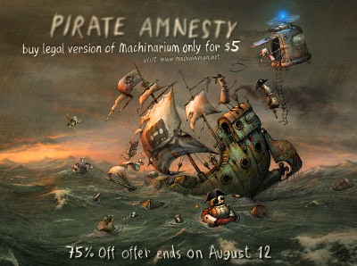
Según Amanita Design su último título, Machinarium, sólo había sido adquirido de forma lícita por entre el 5% y el 15% de los que lo habían jugado. En lugar de ponerse a llorar por los rincones han decidido declarar la “amnistía” a los piratas dándoles una segunda oportunidad y dejando el juego a 5 dólares, es decir, algo menos de 4€. La crítica alabó a este producto indie tras su lanzamiento en octubre de 2009 así que, ni corto ni perezoso, lo compré y he estado jugándolo durante los últimos días.
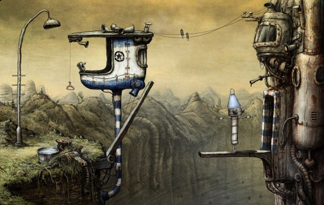
La belleza de lo artesanal
Machinarium es una aventura gráfica de lo más sencilla desarrollada en flash en la que controlamos a un pequeño robot que es arrojado a un vertedero. Nuestro objetivo es infiltrarnos en una misteriosa ciudad de máquinas para rescatar a nuestra amada ya que ha sido secuestrada. Como podéis comprobar por las capturas lo que más destaca en Machinarium es su diseño artístico. Glorioso trabajo al impregnar absolutamente todos los elementos que lo componen con un look de dibujado a mano.
Todo es irregular pero a la vez armonioso en Machinarium, desde los robots, pasando por los edificios, los fondos o cualquier objeto. Los detalles de calidad están por todas partes: animaciones, rincones de escenarios, colores etc. Machinarium es un juego que enternece desde el primer momento y nos desplaza a un mundo triste y lleno de vida al mismo tiempo. Las similitudes con la magnífica producción de Pixar, Wall-E, son más que evidentes y van más allá de la ambientación. No hay ningún tipo de diálogo en todo el desarrollo, no obstante, la comunicación con el jugador es constante a través de los gestos y la música.
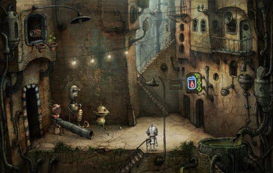
Ejercitando las neuronas
La ciudad máquina nos pondrá a prueba a través de decenas de puzzles en los que se combinan elementos clásicos de los point & click (como mezcla y uso de objetos) con rompecabezas, laberintos y otros enrevesados elementos. No soy ningún experto en aventuras gráficas, siempre he disfrutado de clásicos como Monkey Island o Day of the Tentacle pero poco más y quizás mis impresiones con respecto a la dificultad de los puzzles sean erróneas. Lo cierto es que me he visto obligado a rebanarme los sesos para llegar al ansiado final de la aventura.
No sólo algunas soluciones entrañan una dificultad considerable sino que es posible toparse con callejones sin salida, situación que no he visto en ninguna otra aventura. Esto nos obligará a andar con pies de plomo y guardar nuestros avances muy a menudo. Si tuviera que achacarle algo a su mecánica es la necesidad de depositar los ítems en el inventario manualmente en lugar de utilizar el botón derecho del ratón para descartarlos. Esto se debe al uso de flash como plataforma aunque tampoco es algo que afecte demasiado.
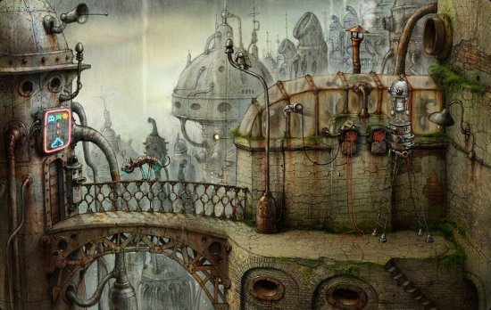
Una gran iniciativa
Amanita Design ha demostrado saber tratar a los usuarios con la iniciativa “Aministía a los piratas”. Cuando las grandes distribuidoras no hacen más que tratar de poner trabas a las copias ilegales de forma infructuosa mientras que descuidan y maltratan al jugador lícito, un pequeño estudio checo da un fuerte golpe en la mesa rebajando su trabajo a un precio muy atractivo. No sólo eso, sino que nos ofrecen las versiones Windows, GNU/Linux y Mac junto con la banda sonora completa del juego en MP3, todo sin DRM.
Los éxitos de estas acciones como esta o la que tuvo lugar hace unos meses con el Humble Indie Bundle (5 juegos indie al precio que el usuario decida) dejan claro que la solución no pasa por establecer validaciones absurdas en los juegos. Aunque también es cierto que grandes producciones conllevan más riesgo por lo que se dan patadas desesperadamente para bajar los índices de piratería.
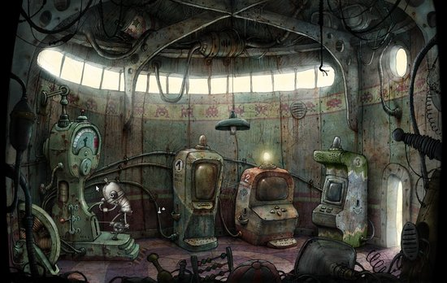
Compra obligada
Cuando fue lanzado se puso a la venta por 20 dólares, precio que estimo un poco alto para los costes y valores de producción del proyecto. En cualquier caso, el hecho de haber descendido hasta los 5 dólares lo convierte en un imprescindible, así de claro. Máxime cuando lo hacen compatible con los 3 sistemas operativos mayoritarios (aunque sea a través de Flash).
Machinarium es una delicia que se disfruta cada segundo.